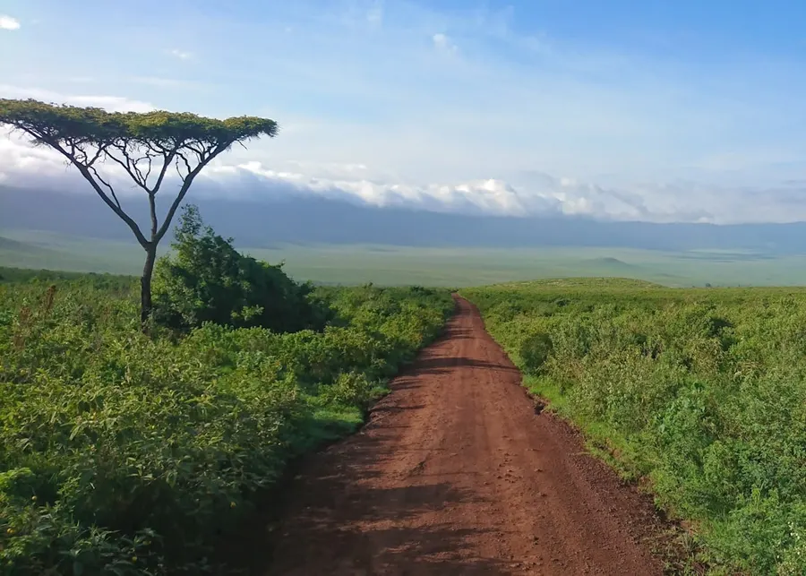
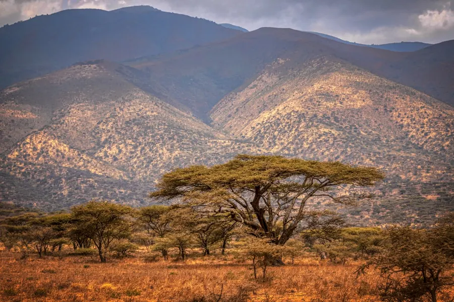
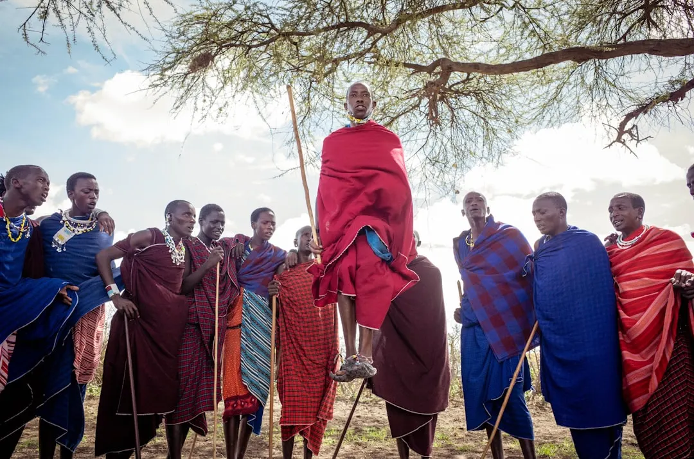

01 · Pourquoi y aller
Les atouts de la Tanzanie
La Tanzanie est un pays qui offre une grande variété d'expériences pour les voyageurs. Les parcs nationaux et les réserves de faune sont parmi les plus beaux et les plus célèbres d'Afrique, avec des dizaines d'espèces d'animaux sauvages, dont les Big Five (lion, léopard, éléphant, buffle et rhinocéros). Les plages de Zanzibar et de Dar es Salaam sont également très populaires pour leurs eaux cristallines et leur sable blanc.
Les montagnes et les vallées de la Tanzanie sont également trèspittoresques, avec des paysages de montagnes, de forêts et de lacs. Le mont Kilimandjaro, le point culminant de l'Afrique, est situé dans le nord-est du pays et attire de nombreux alpinistes et randonneurs.


02 · Quand partir
La meilleure période pour visiter la Tanzanie
La meilleure période pour visiter la Tanzanie dépend de vos intérêts et de vos préférences. La saison sèche, qui va de juin à octobre, est la meilleure période pour les safaris et les randonnées, car les routes et les sentiers sont plus praticables et les animaux sont plus faciles à voir. La saison des pluies, qui va de novembre à mai, est meilleure pour les amateurs de paysages verts et de fleurs, car les pluies font reverdir les paysages et les fleurs sont en pleine floraison.
En juin, la météo est idéale pour les safaris, car les températures sont agréables et la probabilité de pluie est faible. C'est également une bonne période pour visiter les plages, car les eaux sont calmes et la température de l'eau est agréable.
03 · Les quartiers/zones
Les régions à visiter
La Tanzanie est un grand pays avec de nombreuses régions à visiter. La région la plus visitée est le nord, qui comprend les parcs nationaux de Serengeti et de Tarangire, ainsi que les réserves de faune de Ngorongoro et de Manyara. Le sud est également très populaire, avec les parcs nationaux de Selous et de Ruaha, ainsi que les montagnes et les vallées de la région de Morogoro.
La côte est également très agréable, avec les plages de Zanzibar et de Dar es Salaam, ainsi que les villes de Stone Town et de Bagamoyo. Les montagnes et les vallées de la région de Moshi et d'Arusha sont également très pittoresques, avec des paysages de montagnes, de forêts et de lacs.

Photo : Ramon Sanchez Orense / Unsplash
04 · ì voir & à faire
Les activités et les attractions
La Tanzanie offre une grande variété d'activités et d'attractions pour les voyageurs. Les safaris sont parmi les activités les plus populaires, car les parcs nationaux et les réserves de faune sont parmi les plus beaux et les plus célèbres d'Afrique. Les randonnées et les treks sont également très populaires, car les montagnes et les vallées de la Tanzanie sont très pittoresques et offrent des paysages de montagnes, de forêts et de lacs.
Les plages de Zanzibar et de Dar es Salaam sont également très populaires pour les amateurs de détente et de sports nautiques. Les villes de Stone Town et de Bagamoyo sont également très intéressantes pour les amateurs d'histoire et de culture, car elles offrent des architectures coloniales et des marchés traditionnels.
- Safaris dans les parcs nationaux de Serengeti et de Tarangire
- Randonnées et treks dans les montagnes et les vallées de la région de Moshi et d'Arusha
- Détente et sports nautiques sur les plages de Zanzibar et de Dar es Salaam
- Visite des villes de Stone Town et de Bagamoyo pour leur architecture coloniale et leurs marchés traditionnels
05 · Gastronomie
La cuisine tanzanienne
La cuisine tanzanienne est une fusion de différentes cultures, avec des influences africaines, arabes, indiennes et européennes. Les plats traditionnels sont souvent faits de riz, de maïs, de haricots et de légumes, avec des sauces et des épices ajoutées pour donner du goût.
Les fruits de mer sont également très populaires, car la Tanzanie a une longue côte avec des eaux riches en poissons et en fruits de mer. Les plats de viande, tels que le nyama choma (viande grillée), sont également très populaires, ainsi que les plats de poulet et de mouton.
06 · Où dormir
Les hébergements
La Tanzanie offre une grande variété d'hébergements pour les voyageurs, allant des lodges de luxe aux campements et aux guesthouses. Les lodges de luxe sont souvent situés dans les parcs nationaux et les réserves de faune, et offrent des chambres confortables et des services de haute qualité.
Les campements et les guesthouses sont également très populaires, car ils offrent une expérience plus authentique et plus abordable. Les villes de Dar es Salaam et d'Arusha ont également des hôtels et des auberges pour les voyageurs qui cherchent un hébergement plus urbain.
07 · Budget & bons plans
Les dépenses et les économies
La Tanzanie est un pays qui peut être visité avec un budget variable, selon les intérêts et les préférences des voyageurs. Les safaris et les randonnées peuvent être coûteux, car les frais d'entrée et les guides peuvent être élevés.
Cependant, il y a également des possibilités d'économiser, telles que les campements et les guesthouses, qui offrent des tarifs plus abordables. Les voyageurs peuvent également économiser en achetant des produits locaux et en utilisant les transports en commun.
08 · Se déplacer
Les transports
La Tanzanie a un réseau de transports qui peut être utilisé pour se déplacer dans le pays. Les avions et les autobus sont les moyens de transport les plus courants, car ils offrent des liaisons régulières entre les villes et les régions.
Les taxis et les motos-taxis sont également très populaires, car ils offrent une flexibilité et une commodité pour les déplacements courts. Les voyageurs peuvent également louer des voitures ou des vélos pour explorer les régions à leur propre rythme.
09 · Conseils pratiques
Les informations utiles
La Tanzanie est un pays qui nécessite certaines précautions et préparatifs pour les voyageurs. Il est important de prendre des mesures pour se protéger contre les maladies et les accidents, tels que la vaccination et l'utilisation de médicaments préventifs.
Les voyageurs doivent également être conscients des différences culturelles et des coutumes locales, pour éviter les malentendus et les problèmes. Il est également important de respecter l'environnement et les animaux sauvages, pour préserver la beauté et la richesse de la Tanzanie.
Questions fréquentes sur la Tanzanie
Faut-il un visa pour aller en Tanzanie ?
Oui, un visa est obligatoire pour entrer en Tanzanie. Depuis 2024, il est possible d'obtenir un e-visa en ligne avant le départ sur le portail officiel du gouvernement tanzanien (eservices.immigration.go.tz). Le coût est d'environ 50 USD pour les touristes.
Quelle est la meilleure période pour voir la Grande Migration en Tanzanie ?
La Grande Migration se déroule toute l'année, mais les meilleures périodes sont janvier-mars dans le Serengeti sud pour les naissances de gnous, et juillet-octobre pour la traversée de la rivière Mara, souvent considérée comme le spectacle le plus saisissant.
Combien coûte un safari en Tanzanie ?
Un safari en Tanzanie représente un investissement conséquent. Comptez entre 300 et 800 € par personne et par nuit selon le niveau des lodges et camps, incluant hébergement, repas, sorties game drive et droits d'entrée dans les parcs.
Quelle est la monnaie en Tanzanie ?
La monnaie est le shilling tanzanien (TZS). Le dollar américain est largement accepté dans les hôtels et lodges. Prévoyez du cash, les distributeurs automatiques sont rares en dehors de Dar es Salaam et Arusha.
Le Kilimandjaro est-il accessible sans expérience d'alpinisme ?
Oui, l'ascension du Kilimandjaro ne nécessite pas de techniques d'alpinisme, mais une bonne condition physique et une acclimatation rigoureuse. La route Marangu (6 nuits) est la plus accessible. La route Lemosho (8 nuits) offre un meilleur taux de réussite grâce à une acclimatation progressive.
Le conseil Odyssa
N'oubliez pas de télécharger l'application Odyssa pour planifier et organiser votre voyage en Tanzanie, avec des itinéraires personnalisés et des recommandations de lieux à visiter et d'activités à faire.
Planifiez votre séjour à Tanzanie jour par jour et gardez tout hors ligne avec Odyssa — gratuitement.
Télécharger Odyssa